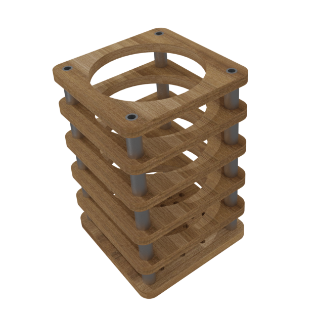

"Стакан" для зубных щеток
Описание товара
Предлагаем Вашему вниманию оригинальный держатель "стакан" для зубных щеток для ванной комнаты!
Характеристики товара
 |
Размеры: | ||
 |
длина | 80мм | |
|
ширина | 80мм | |
|
высота | 120мм | |
|
Материал: | ||
|
дерево, анодированный алюминий. | ||
"Стакан" сделан из экологически чистых материалов, которые не вредят вашему здоровью. Также он выполнен в стиле разреза по слоям, что не только привнесет оригинальность в интерьер Вашей ванной комнаты, но и позволяет эффективнее сушить зубные щетки и иные аксессуары от влаги, в отличии от традиционных стаканов в виде емкости, которые со временем скапливают влагу, остатки зубной пасты и других веществ на дне, превращая все это в неприятную жижу.
Вместе со "стаканом" можно приобрести и другие аксессуары данной серии для ванной комнаты, чтобы собрать единый по стилю и дизайну комплект.